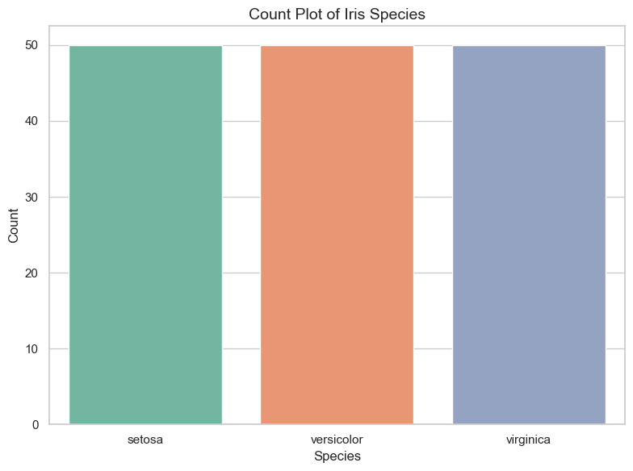
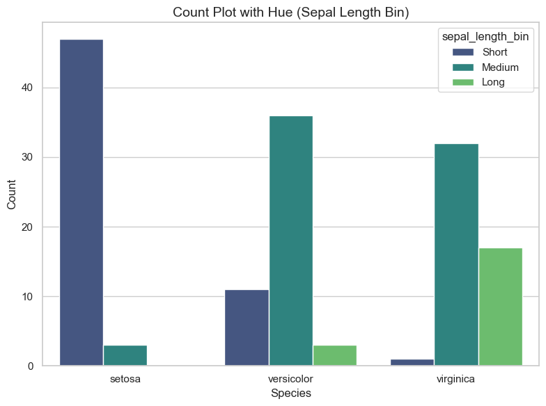
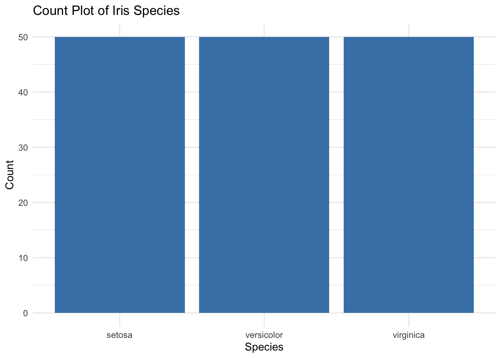
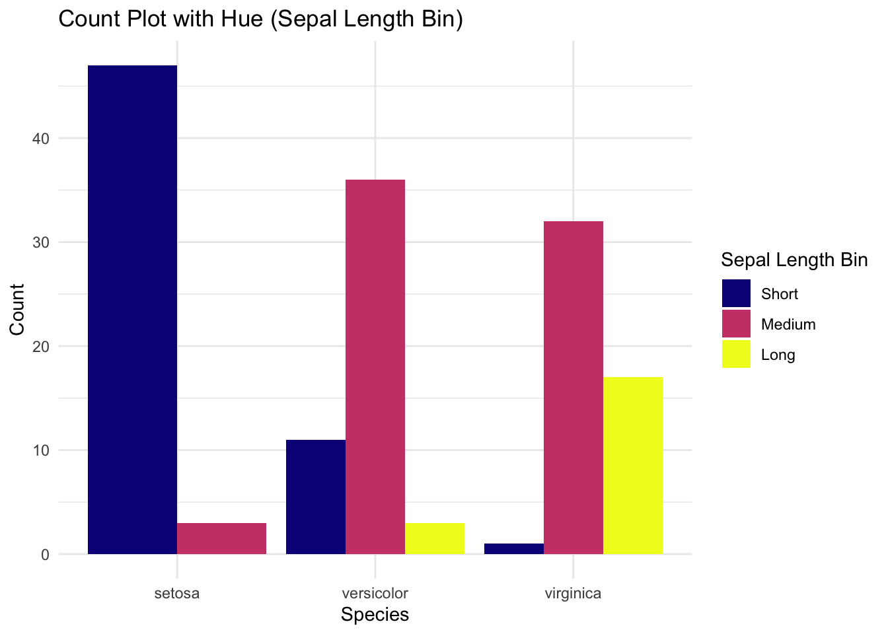

Q&A 7 How do you visualize category counts using a bar plot?
7.1 Explanation
A count plot (also known as a categorical bar plot) shows how many observations fall into each category. It is ideal for quickly assessing the distribution of categorical variables such as species, cut, or class.
You can enhance the plot by:
- Adding color (
hue) to show subgroup breakdown
- Applying professional palettes like
Set2,viridis, orrainbow
- Ordering bars by count or category level
- Adding labels to each bar for clarity
7.2 Python Code
import pandas as pd
import seaborn as sns
import matplotlib.pyplot as plt
# Load dataset
iris = pd.read_csv("data/iris.csv")
# Set aesthetic style
sns.set(style="whitegrid")
# Base count plot with beautiful palette
plt.figure(figsize=(8, 6))
sns.countplot(data=iris, x="species", palette="Set2")
plt.title("Count Plot of Iris Species", fontsize=14)
plt.xlabel("Species")
plt.ylabel("Count")
plt.tight_layout()
plt.show()
# Count plot with hue: bin sepal_length
iris["sepal_length_bin"] = pd.cut(iris["sepal_length"], bins=3, labels=["Short", "Medium", "Long"])
plt.figure(figsize=(8, 6))
sns.countplot(data=iris, x="species", hue="sepal_length_bin", palette="viridis")
plt.title("Count Plot with Hue (Sepal Length Bin)", fontsize=14)
plt.xlabel("Species")
plt.ylabel("Count")
plt.tight_layout()
plt.show()/var/folders/m1/0dxpqygn2ds41kxkjgwtftr00000gn/T/ipykernel_75563/3693477444.py:13: FutureWarning:
Passing `palette` without assigning `hue` is deprecated and will be removed in v0.14.0. Assign the `x` variable to `hue` and set `legend=False` for the same effect.
sns.countplot(data=iris, x="species", palette="Set2")

7.3 R Code
library(readr)
library(ggplot2)
library(dplyr)
library(viridis)
# Load dataset
iris <- read_csv("data/iris.csv")
# Base count plot
ggplot(iris, aes(x = species)) +
geom_bar(fill = "steelblue") +
theme_minimal() +
labs(title = "Count Plot of Iris Species", x = "Species", y = "Count")
# Count plot with hue: bin sepal_length
iris <- iris %>%
mutate(sepal_length_bin = cut(sepal_length, breaks = 3, labels = c("Short", "Medium", "Long")))
ggplot(iris, aes(x = species, fill = sepal_length_bin)) +
geom_bar(position = "dodge") +
scale_fill_viridis_d(option = "C") +
theme_minimal() +
labs(title = "Count Plot with Hue (Sepal Length Bin)",
x = "Species", y = "Count", fill = "Sepal Length Bin")
✅ Count plots provide a clear and colorful summary of category sizes. Using hue and palettes enhances clarity, making group comparisons more informative and visually appealing.